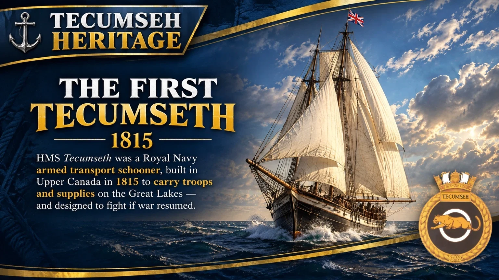

The Voice Pipe · HMCS Tecumseh
Did You Know?
Stories, discoveries and illustrated features from naval history and the heritage of HMCS Tecumseh.

Featured collection · Six slides
The Story of HMS Tecumseth
Discover the Royal Navy schooner built in 1815, her service on the Great Lakes, and the remarkable story of her recovery and preservation.
Explore the gallery →Explore more stories
Historical collections

HMCS Tecumseh — Did You Know?
Six illustrated discoveries from Tecumseh’s history: our buildings, division awards, former Naval Reserve trades, summer training pay, the Shawnee leader Tecumseh, and the stories still waiting to be shared.
Browse this collection →More collections will be added as historical material is researched and approved.